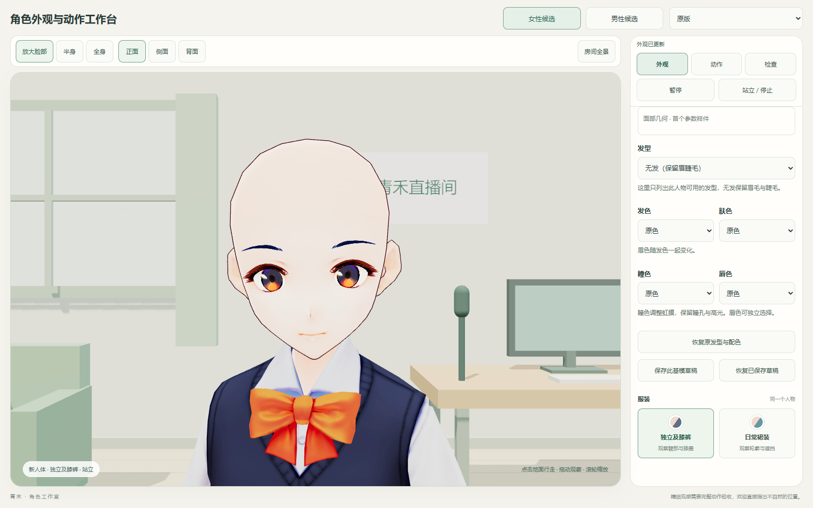
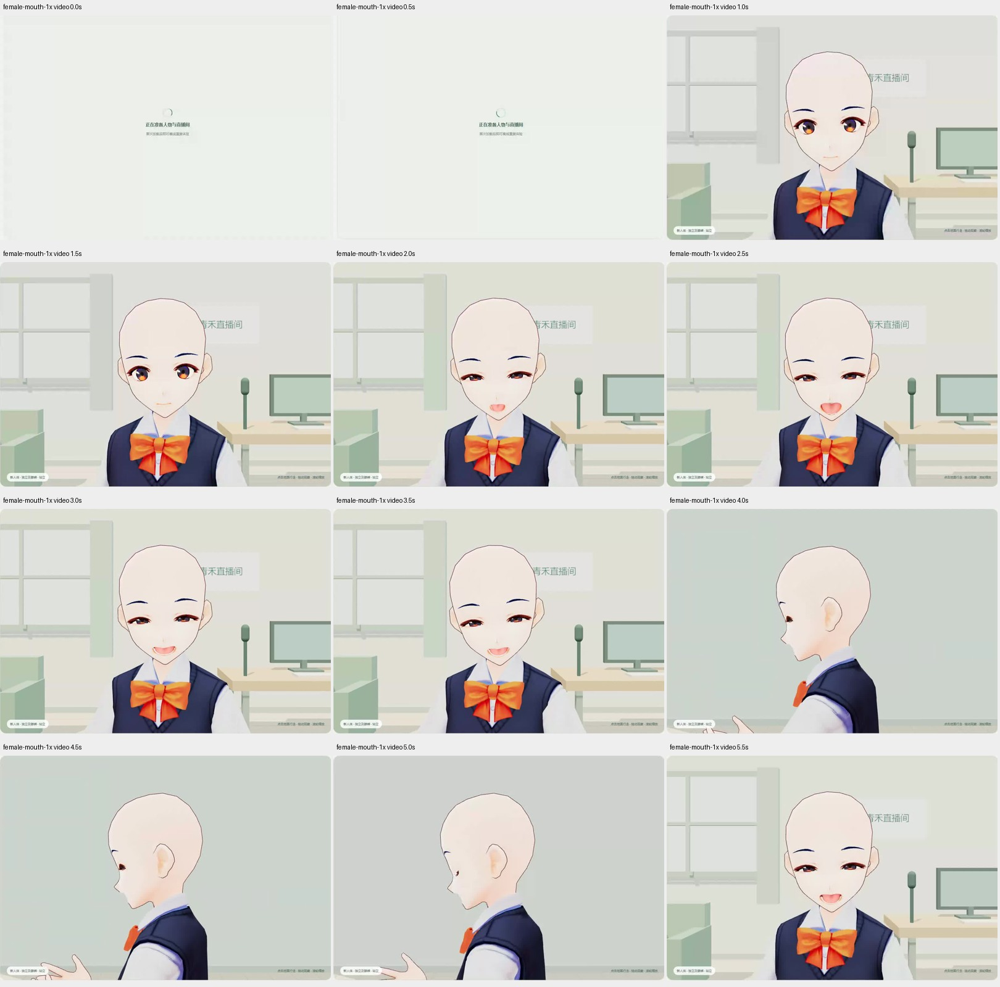

20b0df1d8122 · 无发与嘴宽首样
仅原版男女嘴宽 ±4% 几何参数；不是完整眉眼鼻口编辑器。派生只回读各自无发，嘴宽正确拒绝。草稿保存在此浏览器、按基模独立，不是主播库。
完整原片正常1×（可全屏）
保留加载/准备。近景包含真实UI操作和中性截图停留，不剪接/改速；讲话为程序口型演示而非音频唇同步。
五体无发、同镜头嘴宽和道具

全时段2fps工程抽审

抽帧不等同连续人工自然度验收。录像帧时间仅开发机此次窗口，不代表普通电脑达标。
结果和边界 · 实际检查原日志 · 时钟/道具/表情采样